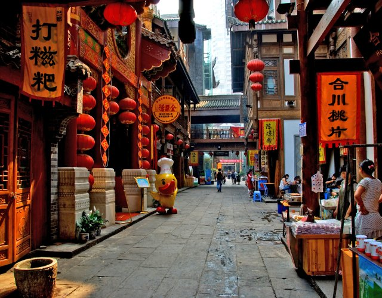
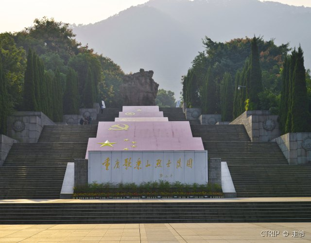
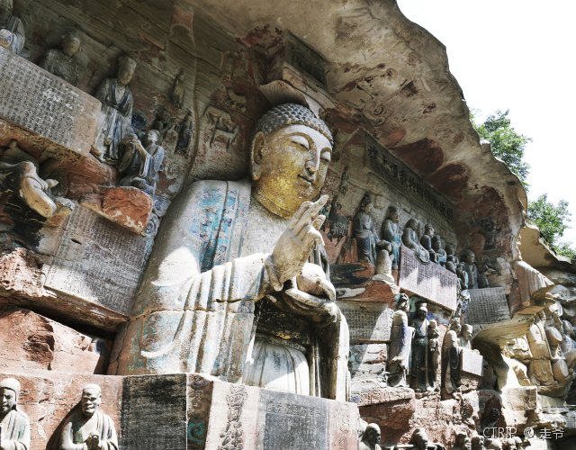
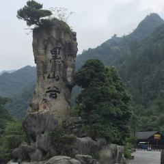

渝中半岛上的解放碑、洪崖洞、和朝天门都是重庆著名的地标。磁器口古镇也是重庆的标志景点之一，这里可以逛老街、品味小吃。
解放战争时期，重庆是《红岩》原型故事的发生地，围着你留下了很多红色景区。到渣滓洞、白公馆、歌乐山烈士陵园等处，缅怀先烈。
大足区的大足石刻，是喜爱宗教、历史文化的游客绝不能错过的地方，石刻开凿于唐宋年间，由于偏僻，得以保存非常完好。
重庆市区内山地很多，山中环境也很优美，南山风景区等景点有着不错的自然风光。
周边的天坑地缝、黑山谷、仙女山、酉阳桃花源等景点，风景秀美又各具特色。
